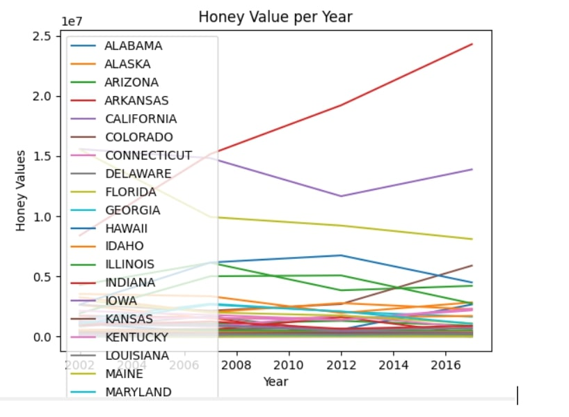

Home
Portfolio
About Me
Portfolio Page
This is my 1.1.9 project, Building an Ice Cream Parlor!

This project gave our players the options to choose 3 different ice cream flavors (strawberry, chocolate, or vanilla) allowing them with 2 different options having them in a cup or cone.
Lastly we ask them if they would like a cherry on top!
This is my 1.2.5 project, Put the fries in the bag!
The project fries in the bag is a game where you collect as many fries in under a minute by putting them in the "bag" while using W, A, S, D onkeys for movement, it also shows you how much your score while playing the game.
This is my 1.3.1 project, Children's hopstial card!

This project is a children's hopsital card, where spongebob characters pop up on the screen hoping you'd feel better, after it leads to a spongebob game making the patients feel good, collecting hamburgers and avoiding jellyfish!
This is my 2.1.6 project, pHishy Fish Tank!
For this project we focused improvements on monitoring the Fish Tank security system from data being compromised, by doing this we removed any access coding or imports and made changes to help improve it's security.
This is my Scratch Project!
This Scratch Project dealt with a lot of animation using the nom nom character moving using the arrow keys starting from the top (candyland), we added feautures where candy salad starts falling down from the sky and if it hits the character the game ends and it will be sent to the underworld.
This is my Rover Data Project!
This project was something we had to figure out based on the data was given to us, light, temperature, light and gyroscope. My team and I came to the conclusion that Rover is in the marshlands.
This is my 3.2.4 Project!

In this project we focused on getting data about the honey bees all over the country, we analyzed the correlation between the honey production and bee population by year.